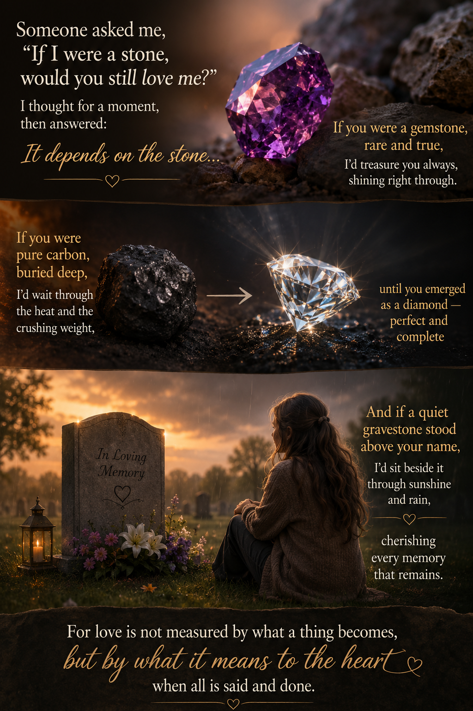

Unspoken: Poems of Love and Memory

If You Were a Stone


Someone asked me, “If I were a stone,
would you still love me?”
I thought for a moment, then answered:
It depends on the stone...
If you were a gemstone, rare and true,
I’d treasure you always, shining right through.
If you were pure carbon, buried deep,
I’d wait through the heat and the crushing weight,
until you emerged as a diamond — perfect and complete
And if a quiet gravestone stood above your name,
I’d sit beside it through sunshine and rain, cherishing every memory that remains.
For love is not measured by what a thing becomes,
but by what it means to the heart when all is said and done.

← Home